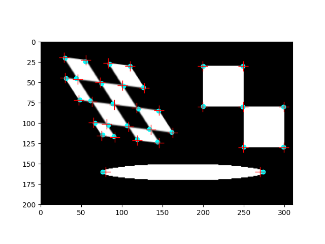

Source
SourceNote
Click here to download the full example code or to run this example in your browser via Binder
Corner detection¶
Detect corner points using the Harris corner detector and determine the subpixel position of corners (1, 2).
from matplotlib import pyplot as plt
from skimage import data
from skimage.feature import corner_harris, corner_subpix, corner_peaks
from skimage.transform import warp, AffineTransform
from skimage.draw import ellipse
# Sheared checkerboard
tform = AffineTransform(scale=(1.3, 1.1), rotation=1, shear=0.7,
translation=(110, 30))
image = warp(data.checkerboard()[:90, :90], tform.inverse,
output_shape=(200, 310))
# Ellipse
rr, cc = ellipse(160, 175, 10, 100)
image[rr, cc] = 1
# Two squares
image[30:80, 200:250] = 1
image[80:130, 250:300] = 1
coords = corner_peaks(corner_harris(image), min_distance=5, threshold_rel=0.02)
coords_subpix = corner_subpix(image, coords, window_size=13)
fig, ax = plt.subplots()
ax.imshow(image, cmap=plt.cm.gray)
ax.plot(coords[:, 1], coords[:, 0], color='cyan', marker='o',
linestyle='None', markersize=6)
ax.plot(coords_subpix[:, 1], coords_subpix[:, 0], '+r', markersize=15)
ax.axis((0, 310, 200, 0))
plt.show()
Total running time of the script: ( 0 minutes 0.130 seconds)